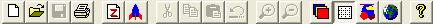
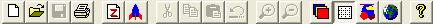- 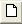 New
- 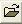 Open
- 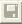 Save
- 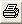 Print
- 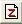 Freshen REZ file ... probably only used by the game developerz
- 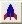 Launch (Gruntz!)
- 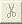 Cut
- Copy
- Paste
- 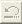 Undo
- Zoom in ... alwayz ghosted ... feature is not implemented
- Zoom out ... alwayz ghosted ... feature is not implemented
- 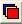 Tile mode (Display planes) ... 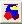 displayed here when in Object mode
- 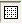 Grid lines
- Object mode ... displayed here when in Tile mode
- World view ... does nothing noticeable in Object Mode ... openz a dialog box in Tile Mode.
- 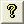 Help topics ... useless ... the link is broken (in Vista), and the contentz often wrong, anyway
{kind=link}
Therefore, make sure to always save your level before making any major changes.
The object will be moved into the clipboard so the Designer can paste (Ctrl-v) the object to a new location.
The object will be copied into the clipboard so the Designer can paste (Ctrl-v) the duplicate object to a new location.
While in Object Mode, you can add an object by double-clicking in the area where you want to place the object.
When you double-click, a dialog box will appear. Use the dialog box to add an object with a specific logic and image set.
Tile mode is the default mode when opening the editor.
If you think of tiles as being similar to bathroom tiles or wallpaper, you’ve got the basic idea.
Tiles are placed together so that they create structures or patterns.
To display the tile selection window you can press Ctrl+T while in Tile Mode (or "Tile | Selection Window").